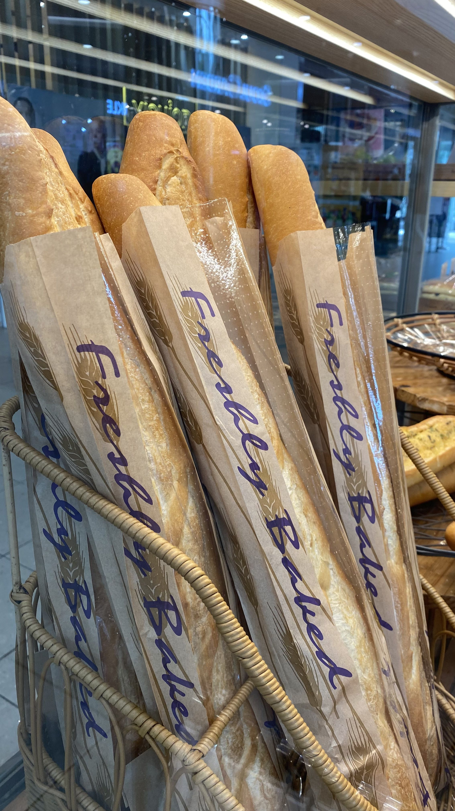
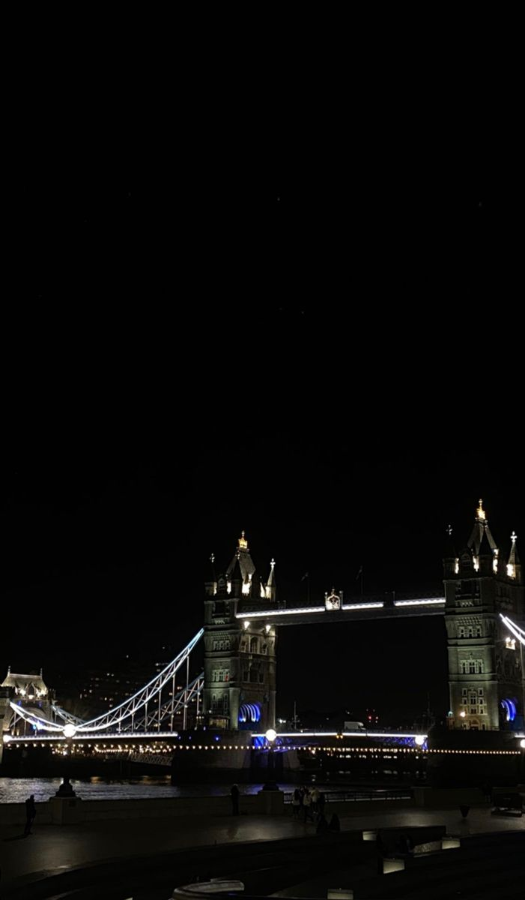
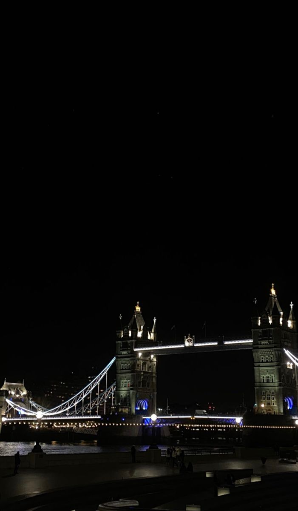

MY TOP FIVE FAVOURITE CITIES
LONDON
London is the capital and largest city of England and the United Kingdom, with a population of just
under 9
million. London exerts a strong influence on its arts, entertainment, fashion, commerce and finance,
education, health care, media, science and technology, tourism, and transport and communications.
PLACES I WILL LIKE TO VISIT
AYIA NAPA
Ayia Napa is a tourist resort at the far eastern end of the southern coast of Cyprus. The resort has 27
beaches, of which 14 have been awarded the Blue Flag award, more than any other resort in Cyprus. In 2011,
Nissi Beach topped the TripAdvisor list of the best beaches in Europe. In 2017, Makronissos Beach was chosen
by Travel Weekly as the third best beach for Cyprus and Greece. In 2018, it was announced that Nissi Beach
ranked third in the list of the most popular beaches on Instagram.
PLACES I WILL LIKE TO VISIT
BARCELONA
Barcelona is a city on the coast of northeastern Spain. It is the capital
and largest city of the autonomous community of Catalonia, as well as the second most populous municipality
of Spain. Barcelona has a rich cultural heritage and is today an important cultural centre and a major
tourist destination. Particularly renowned are the architectural works of Antoni Gaudí and Lluís Domènech i
Montaner, which have been designated UNESCO World Heritage Sites. Barcelona has many venues for live music
and theatre, including the world-renowned Gran Teatre del Liceu opera house, the Teatre Nacional de
Catalunya, the Teatre Lliure and the Palau de la Música Catalana concert hall.
PLACES I WILL LIKE TO VISIT
BUDAPEST
Budapest is the capital and most populous city of Hungary. Budapest is
packed with museums and galleries. The city glories in 223 museums and galleries, which presents several
memories, next to the Hungarian ones as well those of universal and European culture and science. In
Budapest there are 837 monuments, which represent the most of the European artistic style. The classical and
unique Hungarian Art Nouveau buildings are prominent.
PLACES I WILL LIKE TO VISIT
PARIS
Paris is the capital and most populous city of France. Since the 17th
century, Paris has been one of the world's major centres of finance, diplomacy, commerce, fashion,
gastronomy, and science. For centuries, Paris has attracted artists from around the world, who arrive in the
city to educate themselves and to seek inspiration from its vast pool of artistic resources and galleries.
As a result, Paris has acquired a reputation as the "City of Art". The French Revolution and political and
social change in France had a profound influence on art in the capital. Paris was central to the development
of Romanticism in art, with painters such as Géricault. Impressionism, Art Nouveau, Symbolism, Fauvism,
Cubism and Art Deco movements all evolved in Paris.

PLACES I WILL LIKE TO VISIT

 
